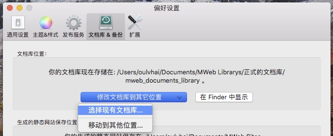

MWeb 3 发布后 2.x 版维护说明及两者之间的功能对比
MWeb 2.x 版相关说明
- MWeb 2.x 版用户也需要重新购买，这个是由于开发者无法获取任何 Mac App Store 用户的购买信息，无法很好区分 MWeb 2.x 用户，所以都统一需要重新购买。
非 Mac App Store 购买的用户，如果是在 2018年5月1号 ～ 2018年7月3号 购买的，可以直接发邮件联系我更换为 3.x 版，注意是更换。 - MWeb 更新无法避免，买断制的软件也不太可能会永久免费更新，MWeb 从 1.x 升级到 2.x 是免费的，为了 MWeb 发展，3.x 必然要重新收费了。订阅方式的确是更合适，但是 MWeb 转成订阅至少会 10 块每月，所以新版用买断其实更优惠一点。我觉得，就算两个版本的价格加起来，相对于一些竟品来说，还是很便宜的。买断制的优点是：买完了就不用再操心续费问题，还会有已拥有的感觉，我认为这个体验是非常好的。
- 关于 MWeb 2.x 版，维护一般是兼容新系统。计划是会做简单维护，但是如果某天遇到兼容新系统难度太大，会直接下架。不过，按目前 macOS 系统的发展情况来看，估计兼容 2，3 个版本不成问题，也就是说，MWeb 2.x 还至少还可以用两三年。作为一个产品，我觉得就算是 MWeb 3.x 出来时才购买 2.x，也是合理的。
2.x 用户数据迁移
文档库迁移：
3.x 启动时会提示导入旧的文档库，如果你开始没做这个，或者其它什么原因有问题，解决办法很简单，把旧的文档库复制到你想要的位置，然后用 3.x 版的 偏好设置 - 文档库&备份 - 修改文档库到其它位置-选择现有文档库 然后选择刚刚你复制的位置即可，如图：

如果还有什么问题，建议查看 MWeb 文档库详细介绍 这篇文章，估计一定能解决所有问题了。
其它数据迁移：
- 发布服务迁移：2.x 版更新到 2.3.0 版就可以导出发布服务了，再用 3.x 导入即可。要注意的是 Evernote 发布服务是无法导入的，需要重新增加。
- 外部模式迁移：关于 2.x 版外部模式引入的文件夹，在 3.x 版只能重新引入，因为引入文件夹的时候系统才会授权 MWeb 读写这个文件夹的权限，所以不能简单导入导出。
3.x 版对于 2.x 版本的改变
- 2.x 版本在 High Sierra 下可能会有我无法复现的 bug，经典问题就是 CPU 100%，这个 3.x 是不会有了，因为 3.x 算是重写了一次了。如果你使用的是 2.x 版，并能稳定复现这个 bug，请联系我。
- 3.x 版的界面是以 ELCapitan 为基础的，所以会更现代一点，也更合理一点，性能上会比 2.x 版好很多。界面也由设计师 @Funpee 整体设计，焕然一新。
- 3.x 的 Markdown 解析器由 @randomatom 帮忙做了很多 bug 修复和细节调整，比如说列表和代码块不用强制空行，这样更合理了。
- 3.x 增加支持 mermaid, viz, echarts, plantuml 这几个画图库。
- 3.x 自定义预览样式不再像 2.x 那样支持整个文件夹自定义方式，仅支持单个 CSS 文件。
- 3.x 版更换了预览时的代码高亮库，支持了行号。跟 2.x 不同的地方是，2.x 如果未定义代码语言，会尝试高亮，3.x 版不会。
- 3.x 发布到印象笔记的样式不再支持跟各种预览样式相适配，也就是样式不能改变，只会跟 mweb-default 这个样式一样。
- 3.x 的全文搜索已经经过优化了，应该是更快了，之后还将继续优化。
- 3.x 导出图片和 PDF 增加预览这一步，之后还会增加一些常用的设置。
- 3.x 增加了导出 Epub 功能，支持单个文件，选择多个文件和导出整个分类为 Epub，而且导出的 Epub 还支持 LaTeX 数学公式。
- 3.x 版导出 HTML 变成单个文件，图片会内嵌在 HTML 中，不再有将整个分类导出为 HTML 的功能。
- 3.x 版计划将改进导出 docx 功能，但是目前导出 docx 功能还是跟 2.x 版一样的。
- 3.x 版优化了文档库中自定义拖拽排序这个功能，不像 2.x 那样混乱到无法使用。
- 3.x 版把 Markdown 导入到文档库时，如果选择的是整个文件夹并且 Markdown 文档有本地图片，会把图片也导入，2.x 版是不会导入图片的。导出为 Markdown 时 3.x 版会把分类结构生成文件夹结构，2.x 版不会。
- 3.x 版新增快速笔记功能，具体可参考：快速笔记。
- 3.x 版新增快速搜索功能，具体可参考：快速搜索。
- 3.x Mac App Store (MAS) 版内置了 iCloud 支持，非 MAS 版跟 2.x 一样，未做处理。3.x MAS 版与非 MAS 版的区别下面说明。
- 3.x 版的大纲视图改为弹出式，如果要固定，则要求拖拽出来固定，不同于 2.x 版的侧边栏式。
- 3.x 版的外部模式变成了两栏模式，而 2.x 为三栏模式。这个优点和缺点不好说，我觉得是各有所爱。具体可以看一下 2.x 版的外部模式介绍：MWeb 外部模式详细介绍。
- 最后，3.x 版 7/4 正式发布只是开始，未来还会不断优化，2.x 则进入维护模式。
想了解更多 3.x 版的情况，可以查看 帮助文档。
MWeb 3 Mac App Store (MAS) 版与非 MAS 版目前的区别
- MAS 版内置 iCloud 支持并由系统提供无提示自动更新，所以我个人是建议使用 MAS 版本。
- MAS 版第一次开启时会自动提示把文档库保存到 iCloud Drive，如果已设置保存在 iCloud Drive，在另一电脑第一次开启会自动检测到 iCloud Drive 中的文档库。非 MAS 版要手动选择。
- MAS 版在偏好设置中把文档库移动到 iCloud Drive 同步到 iOS 不需要手动选择，非 MAS 版需要。
- 非 MAS 同步文档库到 iOS 版的方法跟 2.x 版一样，也是手动把文档库保存到 iCloud Dirve/MWeb/mweb_documents_library。具体可参考：在 iOS 中如何使用 MWeb for Mac 文档库
- MAS 版一定是 Sanbox 的，非 MAS 版目前是非 Sandbox 的。目前两者的差别有：
- 非 MAS 版打开硬盘上的 Markdown 文档，不用引入文档所在的文件夹都支持预览时显示本地的图片，MAS 版要引入才行。
- 非 MAS 版在 Sierra 下导出 PDF 也支持目录，MAS 版不支持。要注意的是： EL Capitan 和 High Sierra 两个版本都是支持 PDF 目录的。